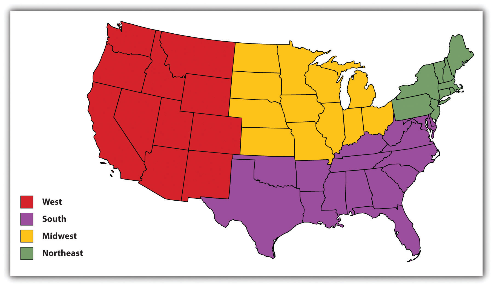
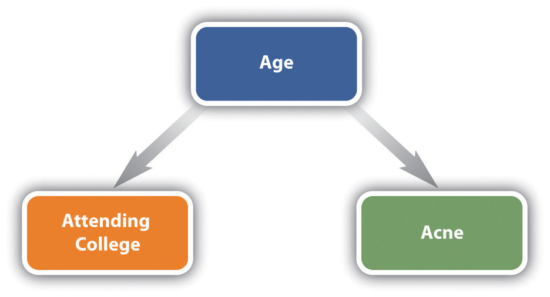

Sociological research consists of several stages. The researcher must first choose a topic to investigate and then become familiar with prior research on the topic. Once appropriate data are gathered and analyzed, the researcher can then draw appropriate conclusions. This section discusses these various stages of the research process.
The first step in the research process is choosing a topic. There are countless topics from which to choose, so how does a researcher go about choosing one? Many sociologists choose a topic based on a theoretical interest they may have. For example, Émile Durkheim’s interest in the importance of social integration motivated his monumental study of suicide that Chapter 1 "Sociology and the Sociological Perspective" discussed. Many sociologists since the 1970s have had a theoretical interest in gender, and this interest has motivated a huge volume of research on the difference that gender makes for behavior, attitudes, and life chances. The link between theory and research lies at the heart of the sociological research process, as it does for other social, natural, and physical sciences. Accordingly, this book discusses many examples of studies motivated by sociologists’ varied theoretical interests.
Many sociologists, such as the two pictured here, have a theoretical interest in gender that leads them to investigate the importance of gender for many aspects of the social world.
Many sociologists also choose a topic based on a social policy interest they may have. For example, sociologists concerned about poverty have investigated its effects on individuals’ health, educational attainment, and other outcomes during childhood, adolescence, and adulthood. Sociologists concerned about racial prejudice and discrimination have carried out many studies documenting their negative consequences for people of color. As Chapter 1 "Sociology and the Sociological Perspective" discussed and as this book emphasizes, the roots of sociology in the United States lie in the use of sociological knowledge to achieve social reform, and many sociologists today continue to engage in numerous research projects because of their social policy interests. The news story that began this chapter discussed an important example of this type of research. The “Sociology Making a Difference” box further discusses research of this type.
Survey Research to Help the Poor
The Community Service Society (CSS) of New York City is a nonprofit organization that, according to its Web site (http://www.cssny.org), “engages in advocacy, research and direct service” to help low-income residents of the city. It was established about 160 years ago and has made many notable accomplishments over the years, including aiding the victims of the Titanic disaster in 1912, helping initiate the free school lunch program that is now found around the United States, and establishing the largest senior volunteer program in the nation.
A key component of the CSS’s efforts today involves gathering much information about the lives of poor New Yorkers through an annual survey of random samples of these residents. Because the needs of the poor are so often neglected and their voices so often unheard, the CSS calls this effort the Unheard Third survey, as the poor represent about one-third of the New York City population. The Unheard Third survey asks respondents their opinions about many issues affecting their lives and also asks them many questions about such matters as their health and health care needs, employment status and job satisfaction, debt, and housing. The CSS then uses all this information in reports about the needs of the poor and near-poor in New York that it prepares for city and state officials, the news media, and key individuals in the private sector. In these ways, the CSS uses survey research in the service of society. As its Web site (http://www.cssny.org/research) states, “research is a critical tool we use to increase our understanding of conditions that drive poverty as we advocate for public policy and programs that will improve the economic standing of low-income New Yorkers.”
A third source of inspiration for research topics is personal experience. Like other social scientists (and probably also natural and physical scientists), many sociologists have had various experiences during childhood, adolescence, or adulthood that lead them to study a topic from a sociological standpoint. For example, a sociologist whose parents divorced while the sociologist was in high school may become interested in studying the effects of divorce on children. A sociologist who was arrested during college for a political protest may become interested in studying how effective protest might be for achieving the aims of a social movement. A sociologist who acted in high school plays may choose a dissertation during graduate school that focuses on a topic involving social interaction. Although the exact number will never be known, many research studies in sociology are undoubtedly first conceived because personal experience led the author to become interested in the theory or social policy addressed by the study.
Whatever topic is chosen, the next stage in the research process is a review of the literature. A researcher who begins a new project typically reads a good number of studies that have already been published on the topic that the researcher wants to investigate. In sociology, most of these studies are published in journals, but many are also published as books. The government and private research organizations also publish reports that researchers consult for their literature reviews.
Regardless of the type of published study, a literature review has several goals. First, the researcher needs to determine that the study she or he has in mind has not already been done. Second, the researcher needs to determine how the proposed study will add to what is known about the topic of the study. How will the study add to theoretical knowledge of the topic? How will the study improve on the methodology of earlier studies? How will the study aid social policy related to the topic? Typically, a research project must answer at least one of these questions satisfactorily for it to have a chance of publication in a scholarly journal, and a thorough literature review is necessary to determine the new study’s possible contribution. A third goal of a literature review is to see how prior studies were conducted. What research design did they use? From where did their data come? How did they measure key concepts and variables? A thorough literature review enhances the methodology of the researcher’s new study and enables the researcher to correct any possible deficiencies in the methodology of prior studies.
In “the old days,” researchers would conduct a literature review primarily by going to an academic library, consulting a printed index of academic journals, trudging through shelf after shelf of printed journals, and photocopying articles they found or taking notes on index cards. Those days are long gone, and thankfully so. Now researchers use any number of electronic indexes and read journal articles online or download a PDF version to read later. Literature reviews are still a lot of work, but the time they take is immeasurably shorter than just a decade ago.
After the literature review has been completed, it is time to formulate the hypothesis that will guide the study. As you might remember from a science class, a hypothesisA statement of the nature of the relationship between an independent variable and a dependent variable. is a statement of the relationship between two variables concerning the units of analysis the researcher is studying. To understand this definition, we must next define variable and unit of analysis. Let’s start with unit of analysisThe focus of sociological research, usually a person, organization, or geographical region., which refers to the type of entity a researcher is studying. As we discuss further in a moment, the most common unit of analysis in sociology is a person, but other units of analysis include organizations and geographical locations. A variableAny characteristic that varies among units of analysis. is any feature or factor that may differ among the units of analysis that a researcher is studying. Key variables in sociological studies of people as the units of analysis include gender, race and ethnicity, social class, age, and any number of attitudes and behaviors. Whatever unit of analysis is being studied, sociological research aims to test relationships between variables or, more precisely, to test whether one variable affects another variable, and a hypothesis outlines the nature of the relationship that is to be tested.
Suppose we want to test the hypothesis that women were more likely than men to have voted for Obama in 2008. The first variable in this hypothesis is gender, whether someone is a woman or a man. (As Chapter 11 "Gender and Gender Inequality" discusses, gender is actually more complex than this, but let’s keep things simple for now.) The second variable is voting preference—for example, whether someone voted for Obama or McCain. In this example, gender is the independent variable and voting preference is the dependent variable. An independent variableA variable that affects the dependent variable. is a variable we think can affect another variable. This other variable is the dependent variableA variable that is influenced by an independent variable., or the variable we think is affected by the independent variable (see Figure 2.3 "Causal Path for the Independent and Dependent Variable"). When sociological research tests relationships between variables, it normally is testing whether an independent variable affects a dependent variable.
Figure 2.3 Causal Path for the Independent and Dependent Variable
Many hypotheses in sociology involve variables concerning people, but many also involve variables concerning organizations and geographical locations. As this statement is meant to suggest, sociological research is conducted at different levels, depending on the unit of analysis chosen. As noted earlier, the most common unit of analysis in sociology is the person; this is probably the type of research with which you are most familiar. If we conduct a national poll to see how gender influences voting decisions or how race influences views on the state of the economy, we are studying characteristics, or variables, involving people, and the person is the unit of analysis. Another common unit of analysis in sociology is the organization. Suppose we conduct a study of hospitals to see whether the patient-to-nurse ratio (the number of patients divided by the number of nurses) is related to the average number of days that patients stay in the hospital. In this example, the patient-to-nurse ratio and the average number of days patients stay are both characteristics of the hospital, and the hospital is the unit of analysis. A third unit of analysis in sociology is the geographical location, whether it is cities, states, regions of a country, or whole societies. In the United States, for example, large cities generally have higher violent crime rates than small cities. In this example, the city is the unit of analysis.
Figure 2.4
One of the units of analysis in sociological research is the geographical location. The major regions of the United States are often compared on various characteristics. In one notable finding, the South has the highest regional homicide rate.
Source: Adapted from http://commons.wikimedia.org/wiki/File:Blank_US_Map.svg.
After the hypothesis has been formulated, the sociologist is now ready to begin the actual research. Data must be gathered via one or more of the research designs examined later in this chapter, and variables must be measured. Data can either be quantitative (numerical) or qualitative (nonnumerical). Data gathered through a questionnaire are usually quantitative. The answers a respondent gives to a questionnaire are coded for computer analysis. For example, if a question asks whether respondents consider themselves to be politically conservative, moderate, or liberal, those who answer “conservative” might receive a “1” for computer analysis; those who choose “moderate” might receive a “2”; and those who say “liberal” might receive a “3.”
Data gathered through observation and/or intensive interviewing, research designs discussed later in this chapter, are usually qualitative. If a researcher interviews college students at length to see what they think about dating violence and how seriously they regard it, the researcher may make simple comparisons, such as “most” of the interviewed students take dating violence very seriously, but without really statistically analyzing the in-depth responses from such a study. Instead, the goal is to make sense of what the researcher observes or of the in-depth statements that people provide to an interviewer and then to relate the major findings to the hypothesis or topic the researcher is investigating.
The measurement of variables is a complex topic and lies far beyond the scope of this discussion. Suffice it to say that accurate measurement of variables is essential in any research project. In a questionnaire, for example, a question should be worded clearly and unambiguously. Take the following question, which has appeared in national surveys: “Do you ever drink more than you think you should?” This question is probably meant to measure whether the respondent has an alcohol problem. But some respondents might answer yes to this question even if they only have a few drinks per year if, for example, they come from a religious background that frowns on alcohol use; conversely, some respondents who drink far too much might answer no because they do not think they drink too much. A researcher who interpreted a yes response from the former respondents as an indicator of an alcohol problem or a no response from the latter respondents as an indicator of no alcohol problem would be in error.
As another example, suppose a researcher hypothesizes that younger couples are happier than older couples. Instead of asking couples how happy they are through a questionnaire, the researcher decides to observe couples as they walk through a shopping mall. Some interesting questions of measurement arise in this study. First, how does the researcher know who is a couple? Second, how sure can the researcher be of the approximate age of each person in the couple? The researcher might be able to distinguish people in their 20s or early 30s from those in their 50s and 60s, but age measurement beyond this gross comparison might often be in error. Third, how sure can the researcher be of the couple’s degree of happiness? Is it really possible to determine how happy a couple is by watching them for a few moments in the mall? What exactly does being happy look like, and do all people look this way when they are happy? These and other measurement problems in this particular study might be so severe that the study should not be done, at least if the researcher hopes to publish it.
After any measurement issues have been resolved, it is time to gather the data. For the sake of simplicity, let’s assume the unit of analysis is the person. A researcher who is doing a study “from scratch” must decide which people to study. Because it is certainly impossible to study everybody, the researcher only studies a sampleA subset of a population., or subset of the population of people in whom the researcher is interested. Depending on the purpose of the study, the population of interest varies widely: it can be the adult population of the United States, the adult population of a particular state or city, all young women aged 13–18 in the nation, or countless other variations.
Many researchers who do survey research (discussed in a later section) study people selected for a random sampleA subset drawn from the larger population in which every unit in the population has the same chance of being included in the subset. of the population of interest. In a random sample, everyone in the population (whether it be the whole U.S. population or just the population of a state or city, all the college students in a state or city or all the students at just one college, and so forth) has the same chance of being included in the survey. The ways in which random samples are chosen are too complex to fully discuss here, but suffice it to say the methods used to determine who is in the sample are equivalent to flipping a coin or rolling some dice. The beauty of a random sample is that it allows us to generalize the results of the sample to the population from which the sample comes. This means that we can be fairly sure of the attitudes of the whole U.S. population by knowing the attitudes of just 400 people randomly chosen from that population.
Other researchers use nonrandom samples, in which members of the population do not have the same chance of being included in the study. If you ever filled out a questionnaire after being approached in a shopping mall or campus student center, it is very likely that you were part of a nonrandom sample. While the results of the study (marketing research or social science research) for which you were interviewed might have been interesting, they could not necessarily be generalized to all students or all people in a state or in the nation because the sample for the study was not random.
A specific type of nonrandom sample is the convenience sampleA nonrandom sample that is used because it is relatively quick and inexpensive to obtain., which refers to a nonrandom sample that is used because it is relatively quick and inexpensive to obtain. If you ever filled out a questionnaire during a high school or college class, as many students have done, you were very likely part of a convenience sample—a researcher can simply go into class, hand out a survey, and have the data available for coding and analysis within a few minutes. Convenience samples often include students, but they also include other kinds of people. When prisoners are studied, they constitute a convenience sample, because they are definitely not going anywhere. Partly because of this fact, convenience samples are also sometimes called captive-audience samples.
Another specific type of nonrandom sample is the quota sampleA nonrandom sample in which units in the sample are chosen according to one or more characteristics so that the sample resembles these characteristics of the population as closely as possible.. In this type of sample, a researcher tries to ensure that the makeup of the sample resembles one or more characteristics of the population as closely as possible. For example, on a campus of 10,000 students where 60% of the students are women and 40% are men, a researcher might decide to study 100 students by handing out a questionnaire to those who happen to be in the student center building on a particular day. If the researcher decides to have a quota sample based on gender, the researcher will select 60 women students and 40 male students to receive the questionnaire. This procedure might make the sample of 100 students more representative of all the students on campus than if it were not used, but it still does not make the sample entirely representative of all students. The students who happen to be in the student center on a particular day might be very different in many respects from most other students on the campus.
As we shall see later when research design is discussed, the choice of a design is very much related to the type of sample that is used. Surveys lend themselves to random samples, for example, while observation studies and experiments lend themselves to nonrandom samples.
After all data have been gathered, the next stage is to analyze the data. If the data are quantitative, the analysis will almost certainly use highly sophisticated statistical techniques beyond the scope of this discussion. Many statistical analysis software packages exist for this purpose, and sociologists learn to use one or more of these packages during graduate school. If the data are qualitative, researchers analyze their data (what they have observed and/or what people have told them in interviews) in ways again beyond our scope. Many researchers now use qualitative analysis software that helps them uncover important themes and patterns in the qualitative data they gather. However qualitative or quantitative data are analyzed, it is essential that the analysis be as accurate as possible. To go back to a point just made, this means that variable measurement must also be as accurate as possible, because even expert analysis of inaccurate data will yield inaccurate results. As a phrase from the field of computer science summarizes this problem, “garbage in, garbage out.” Data analysis can be accurate only if the data are accurate to begin with.
As researchers analyze their data, they naturally try to determine whether their analysis supports their hypothesis. As noted above, when we test a hypothesis, we want to be able to conclude that an independent variable affects a dependent variable. Four criteria must be satisfied before we can conclude this (see Table 2.1 "Criteria of Causality").
Table 2.1 Criteria of Causality
| 1. The independent variable and dependent variable must be statistically related. |
| 2. The independent variable must precede the dependent variable in time and/or in logic. |
| 3. The relationship between the independent variable and dependent variable must not be spurious. |
| 4. No better explanation exists for the relationship between the independent variable and the dependent variable. |
First, the independent variable and the dependent variable must be statistically related. That means that the independent variable makes a statistical difference for where one ranks on the dependent variable. Suppose we hypothesize that age was related to voting preference in the 2008 presidential election. Here age is clearly the independent variable and voting preference the dependent variable. (It is possible for age to affect voting preference, but it is not possible for voting preference to affect age.) Exit poll data indicate that 66% of 18- to 24-year-olds voted for Obama in 2008, while only 45% of those 65 and older voted for him. The two variables are thus statistically related, as younger voters were more likely than older voters to prefer Obama.
The second criterion is called the causal order (or chicken-and-egg) problem and reflects the familiar saying that “correlation does not mean causation.” Just because an independent and a dependent variable are related does not automatically mean that the independent variable affects the dependent variable. It might well be that the dependent variable is affecting the independent. To satisfy this criterion, the researcher must be sure that the independent variable precedes the dependent variable in time or in logic. In the example just discussed, age might affect voting preference, but voting preference definitely cannot affect age. However, causal order is not as clear in other hypotheses. For example, suppose we find a statistical relationship between marital happiness and job satisfaction: the more happy people are in their marriage, the more satisfied they are with their jobs. Which makes more sense, that having a happy marriage leads you to like your job more, or that being satisfied with your work leads you to have a happier marriage? In this example, causal order is not very clear, and thus the second criterion is difficult to satisfy.
The third criterion involves spurious relationshipsA relationship between an independent variable and a dependent variable that exists only because the effects of a third variable have not been taken into account.. A relationship between an independent variable and dependent variable is spurious if a third variable accounts for the relationship because it affects both the independent and dependent variables. Although this sounds a bit complicated, an example or two should make it clear. If you did a survey of Americans 18 and older, you would find that people who attend college have worse acne than people who do not attend college. Does this mean that attending college causes worse acne? Certainly not. You would find this statistical relationship only because a third variable, age, affects both the likelihood of attending college and the likelihood of having acne: young people are more likely than older people to attend college, and also more likely—for very different reasons—to have acne. Controlling for age makes it clear that the original relationship between attending college and having acne was spurious. Figure 2.5 "Diagram of a Spurious Relationship" diagrams this particular spurious relationship; notice that there is no causal arrow between the attending college and having acne variables.
Figure 2.5 Diagram of a Spurious Relationship
In another example, the more fire trucks at a fire, the more damage the fire causes. Does that mean that fire trucks somehow make fires worse, as the familiar saying “too many cooks spoil the broth” might suggest? Of course not! The third variable here is the intensity of the fire: the more intense the fire, the more fire trucks respond to fight it, and the more intense the fire, the more damage it causes. The relationship between number of fire trucks and damage the fire causes is spurious.
The final criterion of causality is that our explanation for the relationship between the independent and dependent variables is the best explanation. Even if the first three criteria are satisfied, that does not necessarily mean the two variables are in fact related. For example, the U.S. crime rate dropped in the early 1980s, and in 1984 the reelection campaign of President Ronald Reagan took credit for this drop. This relationship satisfied the first three criteria: the crime rate fell after President Reagan took office in 1981, the drop in the crime rate could not have affected the election of this president, and there was no apparent third variable that influenced both why Reagan was elected and why the crime rate fell. However, social scientists pointed to another reason that accounted for the crime rate decrease during the 1980s: a drop in the birth rate some 15–20 years earlier, which led to a decrease during the early 1980s of the number of U.S. residents in the high-crime ages of 15–30 (Steffensmeier & Harer, 1991).Steffensmeier, D., & Harer, M. D. (1991). Did crime rise or fall during the Reagan presidency? The effects of an “aging” U.S. population on the nation’s crime rate. Journal of Research in Crime and Delinquency, 28(3), 330–359. The relationship between the election of Ronald Reagan and the crime rate drop was thus only a coincidence.
Once the data are analyzed, the researcher finally determines whether the data analysis supports the hypothesis that has been tested, taking into account the criteria of causality just discussed. Whether or not the hypothesis is supported, the researcher (if writing for publication) typically also discusses what the results of the present research imply for both prior and future studies on the topic. If the primary purpose of the project has been to test or refine a particular theory, the conclusion will discuss the implications of the results for this theory. If the primary purpose has been to test or advance social policy, the conclusion will discuss the implications of the results for policy making relevant to the project’s subject matter.